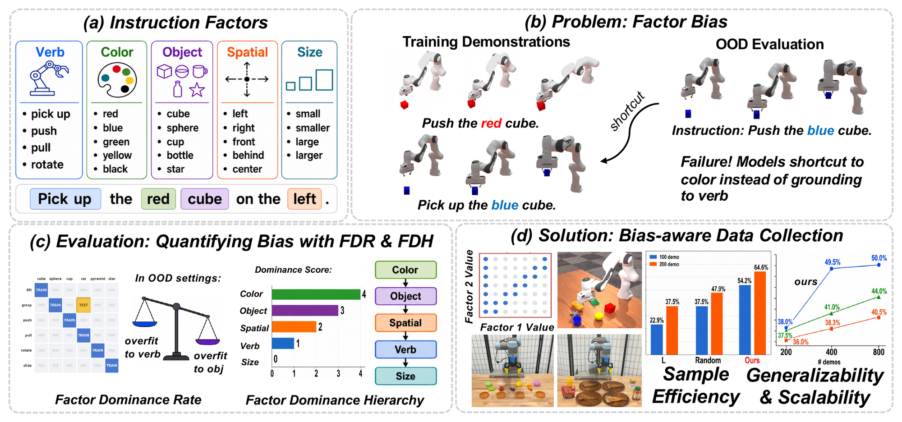
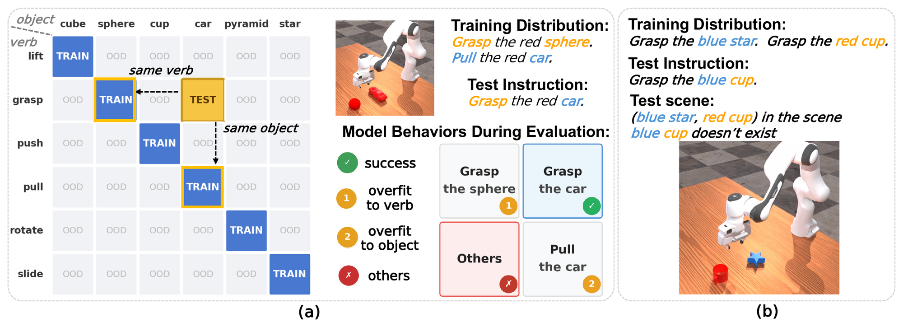
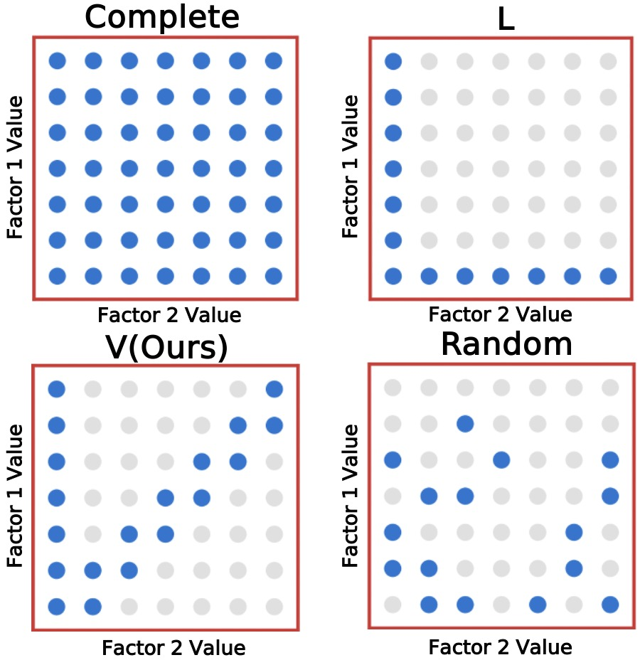
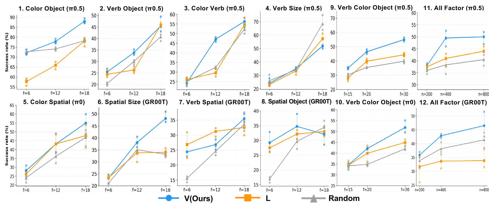
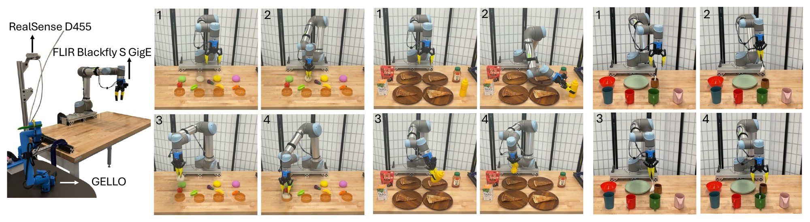
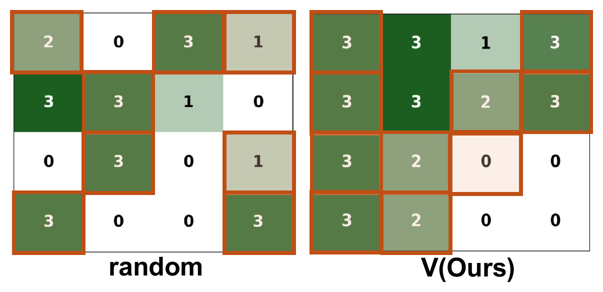

Learning Compositional Generalization via Bias-Aware Evaluation and Data Collection for Robotic Manipulation
Where you spend demonstrations matters as much as how many you collect.
The open-world instruction space is unlimited, so robots must generalize compositionally. Most work scales up data, but says little about how to scale it.
We study the distribution of demonstrations across instruction factors, and use it to decide where a fixed budget should go.

Compositional generalization is essential for robots to follow diverse instructions. However, pretrained policies are known to take shortcuts, deferring to salient cues rather than grounding language. We introduce a diagnostic framework that localizes this failure to individual instruction factors, reusable semantic components such as color, verb, object, size, and spatial attribute. Our framework formalizes instruction factor bias, the tendency of fine-tuned policies to over-rely on dominant factors as shortcuts, and quantifies it through two metrics: the Factor Dominance Rate (FDR), capturing pairwise bias between factors, and the Factor Dominance Hierarchy (FDH), aggregating these into a global ranking. Across six foundation policies, color is the most dominant factor, and verb and size are the most under-grounded; five of the six follow the ordering color ≥ object ≥ spatial ≥ verb ≥ size. We further show the diagnosis is actionable: a bias-aware data collection strategy that reallocates a fixed budget toward under-grounded factors outperforms baselines under matched demonstration budgets in simulation and on a real robot.
Fine-tune on data where two factors always co-occur.
Test on held-out combinations that pit one factor against the other.
A VLM judge labels rollouts; FDR scores pairs, FDH ranks factors.

Color dominates in all six policies; verb and size are the most under-grounded.
> strict dominance; ≈ tie (τ = 5%).
Keep the budget fixed; change where it goes.
V (ours): one column on the under-grounded factor, plus the diagonal and subdiagonal. Baselines: L, Random, and Complete (upper bound).

ManiSkill, with π0, π0.5, and GR00T-N1.7. Under matched budgets, V matches or beats L and Random in most settings.

UR5 + GR00T-N1.7, three tasks, each a 4 × 4 grid over two factors: Bun (color × spatial), Pizza (spatial × object), Cup (verb × color).

| Method | Bun (100) | Bun (200) | Pizza (100) | Cup (100) |
|---|---|---|---|---|
| L | 22.9% 11/48 | 37.5% 18/48 | 35.4% 17/48 | 37.5% 18/48 |
| Random | 37.5% 18/48 | 47.9% 23/48 | 50.0% 24/48 | 47.9% 23/48 |
| V (ours) | 54.2% 26/48 | 64.6% 31/48 | 62.5% 30/48 | 66.7% 32/48 |
(n) = number of training demonstrations.

Per-instruction successes on Bun. Brown: collected cells. V generalizes to more held-out cells than Random.
@inproceedings{qi2026scaleup,
title = {Scale Up Strategically: Learning Compositional Generalization via
Bias-Aware Evaluation and Data Collection for Robotic Manipulation},
author = {Qi, Yu and Ye, Zhang and Xu, Xinyi and Lu, Yuxuan and Sandhu, Amitoj and
Hu, Boce and Huang, Haojie and Tremblay, Jonathan and Wong, Lawson L.S.},
booktitle = {Conference on Robot Learning (CoRL)},
year = {2026}
}